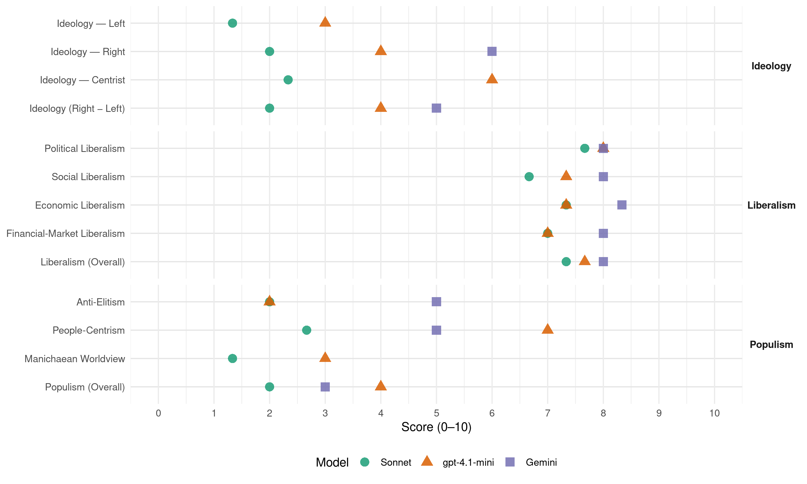

DISY (Cyprus, 2006)
manifesto_id 55711_200605
Get full text: This site shows derived annotations and short verbatim quotes only. The full manifesto text is © Manifesto Project / WZB — obtain it via manifesto-project.wzb.eu using the manifesto_id above.
Headline scores
| Dimension | Sonnet | gpt-4.1-mini | Gemini |
|---|---|---|---|
| Populism (Overall) | 2.0 | 4.0 | 3.0 |
| Anti-Elitism | 2.0 | 2.0 | 5.0 |
| People-Centrism | 2.7 | 7.0 | 5.0 |
| Manichaean Worldview | 1.3 | 3.0 | – |
| Ideology (Right − Left) | 2.0 | 4.0 | 5.0 |
| Liberalism (Overall) | 7.3 | 7.7 | 8.0 |
| Political Liberalism | 7.7 | 8.0 | 8.0 |
| Social Liberalism | 6.7 | 7.3 | 8.0 |
| Economic Liberalism | 7.3 | 7.3 | 8.3 |
| Financial-Market Liberalism | 7.0 | 7.0 | 8.0 |
Evidence per dimension
Economic Liberalism
Gemini · score 9.0 · verified · chunk 1
“στηρίζεται στην ιδιωτική πρωτοβουλία και όχι”
Η οικονομία θα πρέπει να στηρίζεται στην ιδιωτική πρωτοβουλία και όχι στον κρατικό παρεμβατισμό.
Gemini · score 9.0 · verified · chunk 2
“ελεύθερη οικονομία της αγοράς”
επιδοτούμενη αγροτική οικονομία στην ελεύθερη οικονομία της αγοράς έχει προκαλέσει
Gemini · score 7.0 · verified · chunk 3
“κατάργησης του κρατικού ραδιοτηλεοπτικού μονοπωλίου και της φιλελευθεροποίησης”
παρουσιάζουν αλματώδη ανάπτυξη λόγω της κατάργησης του κρατικού ραδιοτηλεοπτικού μονοπωλίου και της φιλελευθεροποίησης του χώρου και της πλήρους ανάπτυξης της σύγχρονης τεχνολογίας.
gpt-4.1-mini · score 8.0 · verified · chunk 1
“Η οικονομία θα πρέπει να στηρίζεται στην ιδιωτική πρωτοβουλία και όχι στον κρατικό παρεμβατισμό”
Η οικονομία θα πρέπει να στηρίζεται στην ιδιωτική πρωτοβουλία και όχι στον κρατικό παρεμβατισμό. Πιστεύουμε πως η κρατική παρέμβαση είναι αναγκαία και αποτελεσματική μόνο στις περιπτώσεις όπου οι δυνάμεις της αγοράς αποτυγχάνουν.
gpt-4.1-mini · score 7.0 · verified · chunk 2
“Προτείνουμε λύσεις στις ανάγκες του κοινωνικού συνόλου χωρίς να υποθηκεύουμε το μέλλον του από υπέρμετρο δανεισμό”
…Οι προτάσεις του Δημοκρατικού Συναγερμού ξεφεύγουν από τους περιορισμούς που συνήθως τίθενται από τα κρατικά ελλείμματα και την έλλειψη δημοσίων πόρων. Προτείνουμε λύσεις στις ανάγκες του κοινωνικού συνόλου χωρίς να υποθηκεύουμε το μέλλον του από υπέρμετρο δανεισμό:…
gpt-4.1-mini · score 7.0 · verified · chunk 3
“την υιοθέτηση της ηλεκτρονικής και ψηφιακής τεχνολογίας στον τομέα των οπτικοακουστικών Μέσων Μαζικής Ενημέρωσης”
Μέσα στα πλαίσια μιας σύγχρονης αντίληψης και αντιμετώπισης των νέων δεδομένων αλλά και προκλήσεων που διαμορφώνονται με την υιοθέτηση και εφαρμογή της ηλεκτρονικής και ψηφιακής τεχνολογίας στον τομέα των οπτικοακουστικών Μέσων Μαζικής Ενημέρωσης, ο Δημοκρατικός Συναγερμός προτείνει και υποστηρίζει τα ακόλουθα:
Sonnet · score 8.0 · verified · chunk 1
“Απορρίπτουμε την φιλοσοφία του κράτους επιχειρηματία”
Απορρίπτουμε την φιλοσοφία του κράτους επιχειρηματία, το οποίο πολλές φορές αποβαίνει εις βάρος της οικονομικής ανάπτυξης
Sonnet · score 7.0 · verified · chunk 2
“ελεύθερη αγορά και ως επίκεντρο τον άνθρωπο”
οραματίζεται μια Κυπριακή Οικονομία που θα έχει ως βάση την ελεύθερη αγορά και ως επίκεντρο τον άνθρωπο
Sonnet · score 7.0 · verified · chunk 3
“Υλοποίηση νόμου για ίδρυση Ιδιωτικών Πανεπιστημίων”
Υλοποίηση νόμου για ίδρυση Ιδιωτικών Πανεπιστημίων και άμεση ίδρυση και λειτουργία τους.
Financial-Market Liberalism
Gemini · score 8.0 · verified · chunk 1
“αξιοπιστία στο Χρηματοπιστωτικό σύστημα της Κύπρου”
που θα προσδώσει την αναγκαία αξιοπιστία στο Χρηματοπιστωτικό σύστημα της Κύπρου.
Gemini · score 8.0 · verified · chunk 2
“μετεξέλιξη του οργανισμού σε χρηματοπιστωτικό ίδρυμα”
Ισότιμης Κατανομής Βαρών:Μετεξέλιξη του οργανισμού σε χρηματοπιστωτικό ίδρυμα με δυνατότητα αύξησης
gpt-4.1-mini · score 7.0 · verified · chunk 1
“Ο Δημοκρατικός Συναγερμός προτείνει την θέσπιση ενός τέτοιου θεσμού που θα προσδώσει την αναγκαία αξιοπιστία στο Χρηματοπιστωτικό σύστημα της Κύπρου”
Ο Δημοκρατικός Συναγερμός προτείνει την θέσπιση ενός τέτοιου θεσμού που θα προσδώσει την αναγκαία αξιοπιστία στο Χρηματοπιστωτικό σύστημα της Κύπρου. Δημιουργία Ενιαίας Εποπτικής Αρχής στον χρηματοοικονομικό τομέα.
Sonnet · score 8.0 · verified · chunk 1
“Ενιαίας Εποπτικής Αρχής στον χρηματοοικονομικό τομέα”
Δημιουργία Ενιαίας Εποπτικής Αρχής στον χρηματοοικονομικό τομέα Η ελευθεροποίηση του Κυπριακού χρηματοοικονομικού συστήματος
Sonnet · score 7.0 · verified · chunk 2
“μετοχοποίηση και μερική αποκρατικοποίηση”
προτείνουμε την μετοχοποίηση και μερική αποκρατικοποίηση τόσο της ΑΤΗΚ όσο και των Ταχυδρομείων
Sonnet · score 6.0 · verified · chunk 3
“υποχρεωτική εφαρμογή όρων ασφαλείας των τραπεζικών καταστημάτων”
υποχρεωτική εφαρμογή όρων ασφαλείας των τραπεζικών καταστημάτων και πιστωτικών ιδρυμάτων, νομοθετική ρύθμιση της λειτουργίας ιδιωτικών επιχειρήσεων παροχής υπηρεσιών ασφάλειας.
Political Liberalism
Gemini · score 8.0 · verified · chunk 1
“αξίες της δημοκρατίας, των ανθρωπίνων δικαιωμάτων”
να μοιραστεί μαζί τους τις αξίες της δημοκρατίας, των ανθρωπίνων δικαιωμάτων, του κράτους δικαίου
Gemini · score 8.0 · verified · chunk 2
“θεσμούς άμεσης συμμετοχικής τοπικής δημοκρατίας”
Καθιέρωση θεσμών άμεσης συμμετοχικής τοπικής δημοκρατίας όπως με την εμπλοκή των δημοτών
Gemini · score 8.0 · verified · chunk 3
“το δημοκρατικό δικαίωμα της ελευθερίας σκέψης και έκφρασης”
έχει ως αφετηρία του τη θεμελιώδη αρχή της πολυφωνίας, το δημοκρατικό δικαίωμα της ελευθερίας σκέψης και έκφρασης, το δικαίωμα του πολίτη για σωστή και υπεύθυνη πληροφόρηση
gpt-4.1-mini · score 8.0 · verified · chunk 1
“Η Κύπρος αποτελεί πλέον πλήρες μέλος της Ευρωπαϊκής Ένωσης”
Η Κύπρος αποτελεί πλέον πλήρες μέλος της Ευρωπαϊκής Ένωσης. Το γεγονός αυτό αποτελεί χωρίς αμφιβολία το μεγαλύτερο επίτευγμα στην σύγχρονη ιστορία της πατρίδας μας.
gpt-4.1-mini · score 8.0 · verified · chunk 2
“Η συμμετοχή μας στην Ενωμένη Ευρώπη δεν μπορεί παρά να είναι το πλαίσιο της εκπαιδευτικής μας στρατηγικής”
…πολιτισμό και τους σύγχρονους προσανατολισμούς. Η συμμετοχή μας στην Ενωμένη Ευρώπη δεν μπορεί παρά να είναι το πλαίσιο της εκπαιδευτικής μας στρατηγικής. Οι εκπαιδευτικοί μας επιβάλλεται να συνεχίσουν να τυγχάνουν της αμέριστης υποστήριξης της πολιτείας για να μπορέσουν να αναπτύξουντα προσόντα…
gpt-4.1-mini · score 8.0 · verified · chunk 3
“την οικονομική αυτονόμηση της δικαστικής εξουσίας”
Προτείνουμε την οικονομική αυτονόμηση της δικαστικής εξουσίας, τον εκσυγχρονισμό και την απλούστευση των δικονομικών κανόνων προς επrτάχυνση των διαδικασιών απονομής της δικαιοσύνης και τη δια βίου εκπαίδευση των δικαστών και δικαστικών υπαλλήλων.
Sonnet · score 8.0 · verified · chunk 1
“ανεξάρτητης τριμελούς Επιτροπής Εκλογών”
Δημιουργία ανεξάρτητης τριμελούς Επιτροπής Εκλογών (Election Commission) η οποία να είναι επιφορτισμένη μεταξύ άλλων με τον έλεγχο
Sonnet · score 8.0 · verified · chunk 2
“άμεσης συμμετοχικής τοπικής δημοκρατίας”
Καθιέρωση θεσμών άμεσης συμμετοχικής τοπικής δημοκρατίας όπως με την εμπλοκή των δημοτών στη διαδικασία λήψεως αποφάσεων
Sonnet · score 7.0 · verified · chunk 3
“ελευθερίας σκέψης και έκφρασης”
έχει ως αφετηρία του τη θεμελιώδη αρχή της πολυφωνίας, το δημοκρατικό δικαίωμα της ελευθερίας σκέψης και έκφρασης, το δικαίωμα του πολίτη για σωστή και υπεύθυνη πληροφόρηση
Liberalism (Overall)
Gemini · score 8.0 · verified · chunk 1
“μοντέλο για την κοινωνικοοικονομική ανάπτυξη”
προτείνει τον Κοινωνικό Φιλελευθερισμό ως το μοντέλο για την κοινωνικοοικονομική ανάπτυξη.
Gemini · score 8.0 · verified · chunk 2
“εκφραστήςτου Κοινωνικού Φιλελευθερισμού”
Δημοκρατικός Συναγερμός, ως ο εκφραστήςτου Κοινωνικού Φιλελευθερισμού, οραματίζεται μια
Gemini · score 8.0 · verified · chunk 3
“το δημοκρατικό δικαίωμα της ελευθερίας σκέψης και έκφρασης”
έχει ως αφετηρία του τη θεμελιώδη αρχή της πολυφωνίας, το δημοκρατικό δικαίωμα της ελευθερίας σκέψης και έκφρασης, το δικαίωμα του πολίτη για σωστή και υπεύθυνη πληροφόρηση
gpt-4.1-mini · score 8.0 · verified · chunk 1
“Η Κύπρος αποτελεί πλέον πλήρες μέλος της Ευρωπαϊκής Ένωσης”
Η Κύπρος αποτελεί πλέον πλήρες μέλος της Ευρωπαϊκής Ένωσης. Το γεγονός αυτό αποτελεί χωρίς αμφιβολία το μεγαλύτερο επίτευγμα στην σύγχρονη ιστορία της πατρίδας μας.
gpt-4.1-mini · score 7.0 · verified · chunk 2
“Προτείνουμε λύσεις στις ανάγκες του κοινωνικού συνόλου χωρίς να υποθηκεύουμε το μέλλον του από υπέρμετρο δανεισμό”
…Οι προτάσεις του Δημοκρατικού Συναγερμού ξεφεύγουν από τους περιορισμούς που συνήθως τίθενται από τα κρατικά ελλείμματα και την έλλειψη δημοσίων πόρων. Προτείνουμε λύσεις στις ανάγκες του κοινωνικού συνόλου χωρίς να υποθηκεύουμε το μέλλον του από υπέρμετρο δανεισμό:…
gpt-4.1-mini · score 8.0 · verified · chunk 3
“την οικονομική αυτονόμηση της δικαστικής εξουσίας”
Προτείνουμε την οικονομική αυτονόμηση της δικαστικής εξουσίας, τον εκσυγχρονισμό και την απλούστευση των δικονομικών κανόνων προς επrτάχυνση των διαδικασιών απονομής της δικαιοσύνης και τη δια βίου εκπαίδευση των δικαστών και δικαστικών υπαλλήλων.
Sonnet · score 8.0 · verified · chunk 1
“οικονομία της αγοράς και της ανάπτυξης”
Δίνουμε έμφαση στην οικονομία της αγοράς και της ανάπτυξης. Η οικονομία θα πρέπει να στηρίζεται στην ιδιωτική πρωτοβουλία
Sonnet · score 7.0 · verified · chunk 2
“ελεύθερη αγορά και ως επίκεντρο τον άνθρωπο”
οραματίζεται μια Κυπριακή Οικονομία που θα έχει ως βάση την ελεύθερη αγορά και ως επίκεντρο τον άνθρωπο
Sonnet · score 7.0 · verified · chunk 3
“ελευθερίας σκέψης και έκφρασης”
έχει ως αφετηρία του τη θεμελιώδη αρχή της πολυφωνίας, το δημοκρατικό δικαίωμα της ελευθερίας σκέψης και έκφρασης, το δικαίωμα του πολίτη για σωστή και υπεύθυνη πληροφόρηση
Anti-Elitism
Gemini · score 5.0 · verified · chunk 3
“εκεί που θέλει να ανοίξει τις πόρτες για να επωφεληθούν εκείνοι που εξασφαλίζουν την εύνοια του”
Αντίθετα το κράτος σήμερα παρουσιάζεται δύσκαμπτο εκεί που χρειάζεται να προσφέρει φροντίδα και ανακούφιση και φοβερά ευλύγιστο εκεί που θέλει να ανοίξει τις πόρτες για να επωφεληθούν εκείνοι που εξασφαλίζουν την εύνοια του.
gpt-4.1-mini · score 2.0 · verified · chunk 1
“Όσοι καλλιεργούντην πόλωση, τη διάσπαση, το διχασμότων Ελληνοκυπραίων προσφέρουν πολύ κακές υπηρεσίες στην Κύπρο”
Είναι αδιαπραγμάτευτη θέση μας πως όλοι οι Κύπριοι μαζί, μπορούμε περισσότερα. Θέλουμε την ενότητα γιατί η Κύπρος αξίζει περισσότερα. Όσοι καλλιεργούντην πόλωση, τη διάσπαση, το διχασμότων Ελληνοκυπραίων προσφέρουν πολύ κακές υπηρεσίες στην Κύπρο. Εμείς πιστεύουμε στην ενότητα, τη συλλογικότητα, την καλύτερη λεrτουργία του Εθνικού Συμβουλίου.
Sonnet · score 2.0 · verified · chunk 1
“ξεπερασμένες δογματικές αντιλήψεις του ΑΚΕΛ”
κάτι που οφείλεται στις ξεπερασμένες δογματικές αντιλήψεις του ΑΚΕΛ, στερεί από την Κύπρο την ευκαιρία
Sonnet · score 2.0 · mixed · chunk 2
“αποτυχημένων πολιτικών που ακολουθήθηκαν”
ως συνέπεια των αποτυχημένων πολιτικών που ακολουθήθηκαν για σειρά ετών από όλες τις κυβερνήσεις
Sonnet · score 2.0 · mixed · chunk 3
“δύσκαμπτο εκεί που χρειάζεται να προσφέρει φροντίδα”
Αντίθετα το κράτος σήμερα παρουσιάζεται δύσκαμπτο εκεί που χρειάζεται να προσφέρει φροντίδα και ανακούφιση και φοβερά ευλύγιστο εκεί που θέλει να ανοίξει τις πόρτες για να επωφεληθούν εκείνοι που εξασφαλίζουν την εύνοια του.
Ideology — Centrist
gpt-4.1-mini · score 6.0 · verified · chunk 1
“Πρώτα η Κύπρος, πρώτα η Ενωμένη Κύπρος”
Πρώτα η Κύπρος, πρώτα η Ενωμένη Κύπρος Το Εθνικό Συμβούλιο στις 12 Απριλίου 2005 κωδικοποίησε μια δέσμη αλλαγών για μεταρρύθμιση του Σχεδίου Λύσης του ΟΗΕ, έτσι που να ικανοποιεί τις μέγιστες ανησυχίεςτων Ε/Κ.
Sonnet · score 2.0 · verified · chunk 1
“Πρώτα η Κύπρος”
Για εμάς είναι αδιαπραγμάτευτη θέση: Πρώτα η Κύπρος. Στο Κυπριακό όλοι οφείλουμε
Sonnet · score 3.0 · verified · chunk 2
“εκφραστής του Κοινωνικού Φιλελευθερισμού”
Ο Δημοκρατικός Συναγερμός, ως ο εκφραστής του Κοινωνικού Φιλελευθερισμού
Sonnet · score 2.0 · verified · chunk 3
“πολιτική λιτότητας δεν έχει θέση στον αθλητισμό”
Για μας η πολιτική λιτότητας δεν έχει θέση στον αθλητισμό. Ο αθλητισμός ως μια δυναμική έκφραση του κοινωνικοπολιτικού γίγνεσθαι
Ideology — Left
gpt-4.1-mini · score 3.0 · verified · chunk 1
“Απορρίπτουμε την φιλοσοφία του κράτους επιχειρηματία, το οποίο πολλές φορές αποβαίνει εις βάρος της οικονομικής ανάπτυξης”
Ο Δημοκρατικός Συναγερμός προτείνει τον Κοινωνικό Φιλελευθερισμό ως το μοντέλο για την κοινωνικοοικονομική ανάπτυξη. Είμαστε υπέρ της κοινωνικής οικονομίας της αγοράς η οποία σέβεται τον πολίτη και ενθαρρύνει την ανάπτυξη. Απορρίπτουμε την φιλοσοφία του κράτους επιχειρηματία, το οποίο πολλές φορές αποβαίνει εις βάρος της οικονομικής ανάπτυξης.
Sonnet · score 1.0 · verified · chunk 1
“κοινωνική οικονομία της αγοράς”
Είμαστε υπέρ της κοινωνικής οικονομίας της αγοράς η οποία σέβεται τον πολίτη και ενθαρρύνει την ανάπτυξη
Sonnet · score 2.0 · verified · chunk 2
“προστασία των ευάλωτων και αδύνατων ομάδων”
με ιδιαίτερη έμφαση στην προστασία των ευάλωτων και αδύνατων ομάδων του πληθυσμού
Sonnet · score 1.0 · verified · chunk 3
“ισόρροπα άνδρες και γυναίκες”
Τη χορηγία ισχυρών οικονομικών κινήτρων σε ιδιωτικές επιχειρήσεις, εφ’ όσον προσλαμβάνουν ισόρροπα άνδρες και γυναίκες
Ideology (Right − Left)
Gemini · score 5.0 · verified · chunk 3
“είναι μέτρο Άμυνας και Εθνικής επιβίωσης του Ελληνισμού”
Με την έννοια η καλλιέργεια και η προβολή του πολιτισμού μας, της Γλώσσας μας και της Παράδοσης μας είναι μέτρο Άμυνας και Εθνικής επιβίωσης του Ελληνισμού.
gpt-4.1-mini · score 4.0 · verified · chunk 1
“Πρώτα η Κύπρος, πρώτα η Ενωμένη Κύπρος”
Πρώτα η Κύπρος, πρώτα η Ενωμένη Κύπρος Το Εθνικό Συμβούλιο στις 12 Απριλίου 2005 κωδικοποίησε μια δέσμη αλλαγών για μεταρρύθμιση του Σχεδίου Λύσης του ΟΗΕ, έτσι που να ικανοποιεί τις μέγιστες ανησυχίεςτων Ε/Κ.
Sonnet · score 2.0 · verified · chunk 1
“Κοινωνικό Φιλελευθερισμό”
Ο Δημοκρατικός Συναγερμός προτείνει τον Κοινωνικό Φιλελευθερισμό ως το μοντέλο για την κοινωνικοοικονομική ανάπτυξη
Sonnet · score 2.0 · verified · chunk 2
“εκφραστής του Κοινωνικού Φιλελευθερισμού”
Ο Δημοκρατικός Συναγερμός, ως ο εκφραστής του Κοινωνικού Φιλελευθερισμού
Sonnet · score 2.0 · verified · chunk 3
“Εθνικής επιβίωσης του Ελληνισμού”
η καλλιέργεια και η προβολή του πολιτισμού μας, της Γλώσσας μας και της Παράδοσης μας είναι μέτρο Άμυνας και Εθνικής επιβίωσης του Ελληνισμού.
Ideology — Right
Gemini · score 6.0 · verified · chunk 3
“είναι μέτρο Άμυνας και Εθνικής επιβίωσης του Ελληνισμού”
Με την έννοια η καλλιέργεια και η προβολή του πολιτισμού μας, της Γλώσσας μας και της Παράδοσης μας είναι μέτρο Άμυνας και Εθνικής επιβίωσης του Ελληνισμού.
gpt-4.1-mini · score 4.0 · verified · chunk 1
“Η Τουρκία βρίσκεται κάτω από την αυστηρή αξιολόγηση της ΕΕ και εμείς ζητάμε να κριθεί τώρα, στα πρώτα στάδια της διαδικασίας, για τη συμπεριφορά της στο Κυπριακό”
Η Τουρκία βρίσκεται κάτω από την αυστηρή αξιολόγηση της ΕΕ και εμείς ζητάμε να κριθεί τώρα, στα πρώτα στάδια της διαδικασίας, για τη συμπεριφορά της στο Κυπριακό και τις προσπάθειες επίλυσής του. Θέλουμε μια Κύπρο που να έχει φωνή, κύρος και παρουσία στις εξελίξεις της ΕΕ.
Sonnet · score 2.0 · verified · chunk 1
“παρεμπόδιση της παράνομης μετανάστευσης”
πολιτικών με στόχο την ενίσχυση των εξωτερικών συνόρων της Ευρωπαϊκής Ένωσης για παρεμπόδιση της παράνομης μετανάστευσης
Sonnet · score 2.0 · verified · chunk 2
“αυξημένη παρουσία αλλοδαπών στην Κύπρο”
Ένα άλλο από τα νεότερα προβλήματα της Κυπριακής Κοινωνίας αποτελεί η αυξημένη παρουσία αλλοδαπών στην Κύπρο
Sonnet · score 2.0 · verified · chunk 3
“Εθνικής επιβίωσης του Ελληνισμού”
η καλλιέργεια και η προβολή του πολιτισμού μας, της Γλώσσας μας και της Παράδοσης μας είναι μέτρο Άμυνας και Εθνικής επιβίωσης του Ελληνισμού.
Manichaean Worldview
gpt-4.1-mini · score 3.0 · verified · chunk 1
“Η Τουρκία βρίσκεται κάτω από την αυστηρή αξιολόγηση της ΕΕ και εμείς ζητάμε να κριθεί τώρα, στα πρώτα στάδια της διαδικασίας, για τη συμπεριφορά της στο Κυπριακό”
Η Τουρκία βρίσκεται κάτω από την αυστηρή αξιολόγηση της ΕΕ και εμείς ζητάμε να κριθεί τώρα, στα πρώτα στάδια της διαδικασίας, για τη συμπεριφορά της στο Κυπριακό και τις προσπάθειες επίλυσής του. Θέλουμε μια Κύπρο που να έχει φωνή, κύρος και παρουσία στις εξελίξεις της ΕΕ.
Sonnet · score 2.0 · verified · chunk 1
“τουρκική εισβολή και κατοχή του 37%”
Η τουρκική εισβολή και κατοχή του 37% του κυπριακού εδάφους παραμένει το κορυφαίο πρόβλημα
Sonnet · score 1.0 · verified · chunk 2
“αρνητικής στάσης των Τούρκων”
Λόγω της αρνητικής στάσης των Τούρκων και των νέων όρων που συνεχώς θέτουν
Sonnet · score 1.0 · verified · chunk 3
“φαινόμενα αυθαιρεσίας, διαπλοκής οικονομικών και πολιτικών συμφερόντων”
να επικρατήσουν στο χώρο των ραδιοτηλεοπτικών μέσων συνθήκες διαφάνειας και να παταχθούν τα ανησυχητικά φαινόμενα αυθαιρεσίας, διαπλοκής οικονομικών και πολιτικών συμφερόντων.
People-Centrism
Gemini · score 5.0 · verified · chunk 3
“με την ενεργό συμμετοχή και εμπλοκή των πολιτών”
Γι’ αυτό, ζητούμενο των καιρών είναι για μας η κατάκτηση της πολrτιστικής δημοκρατίας με την ενεργό συμμετοχή και εμπλοκή των πολιτών στην πολιτιστική ζωή και πολιτισμική κίνηση.
gpt-4.1-mini · score 7.0 · verified · chunk 1
“Είναι αδιαπραγμάτευτη θέση μας πως όλοι οι Κύπριοι μαζί, μπορούμε περισσότερα”
Είναι αδιαπραγμάτευτη θέση μας πως όλοι οι Κύπριοι μαζί, μπορούμε περισσότερα. Θέλουμε την ενότητα γιατί η Κύπρος αξίζει περισσότερα. Όσοι καλλιεργούντην πόλωση, τη διάσπαση, το διχασμότων Ελληνοκυπραίων προσφέρουν πολύ κακές υπηρεσίες στην Κύπρο.
Sonnet · score 3.0 · verified · chunk 1
“Πρώτα η Κύπρος, πρώτα η Ενωμένη Κύπρος”
Για εμάς είναι αδιαπραγμάτευτη θέση: Πρώτα η Κύπρος. Στο Κυπριακό όλοι οφείλουμε
Sonnet · score 3.0 · verified · chunk 2
“επίκεντρο τον άνθρωπο”
οραματίζεται μια Κυπριακή Οικονομία που θα έχει ως βάση την ελεύθερη αγορά και ως επίκεντρο τον άνθρωπο
Sonnet · score 2.0 · verified · chunk 3
“επίκεντρο τον άνθρωπο”
Ο αθλητισμός ως μια δυναμική έκφραση του κοινωνικοπολιτικού γίγνεσθαι απασχολούσε πάντοτε πολιτικούς χώρους και ιδεολογίες που είχαν επίκεντρο τον άνθρωπο.
Populism (Overall)
Gemini · score 3.0 · verified · chunk 3
“εκεί που θέλει να ανοίξει τις πόρτες για να επωφεληθούν εκείνοι που εξασφαλίζουν την εύνοια του”
Αντίθετα το κράτος σήμερα παρουσιάζεται δύσκαμπτο εκεί που χρειάζεται να προσφέρει φροντίδα και ανακούφιση και φοβερά ευλύγιστο εκεί που θέλει να ανοίξει τις πόρτες για να επωφεληθούν εκείνοι που εξασφαλίζουν την εύνοια του.
gpt-4.1-mini · score 4.0 · verified · chunk 1
“Είναι αδιαπραγμάτευτη θέση μας πως όλοι οι Κύπριοι μαζί, μπορούμε περισσότερα”
Είναι αδιαπραγμάτευτη θέση μας πως όλοι οι Κύπριοι μαζί, μπορούμε περισσότερα. Θέλουμε την ενότητα γιατί η Κύπρος αξίζει περισσότερα. Όσοι καλλιεργούντην πόλωση, τη διάσπαση, το διχασμότων Ελληνοκυπραίων προσφέρουν πολύ κακές υπηρεσίες στην Κύπρο.
Sonnet · score 2.0 · verified · chunk 1
“Πρώτα η Κύπρος”
Για εμάς είναι αδιαπραγμάτευτη θέση: Πρώτα η Κύπρος. Στο Κυπριακό όλοι οφείλουμε να επιλέγουμε
Sonnet · score 2.0 · verified · chunk 2
“αποτυχημένων πολιτικών που ακολουθήθηκαν”
ως συνέπεια των αποτυχημένων πολιτικών που ακολουθήθηκαν για σειρά ετών από όλες τις κυβερνήσεις
Sonnet · score 2.0 · verified · chunk 3
“δύσκαμπτο εκεί που χρειάζεται να προσφέρει φροντίδα”
Αντίθετα το κράτος σήμερα παρουσιάζεται δύσκαμπτο εκεί που χρειάζεται να προσφέρει φροντίδα και ανακούφιση και φοβερά ευλύγιστο εκεί που θέλει να ανοίξει τις πόρτες για να επωφεληθούν εκείνοι που εξασφαλίζουν την εύνοια του.
Social Liberalism